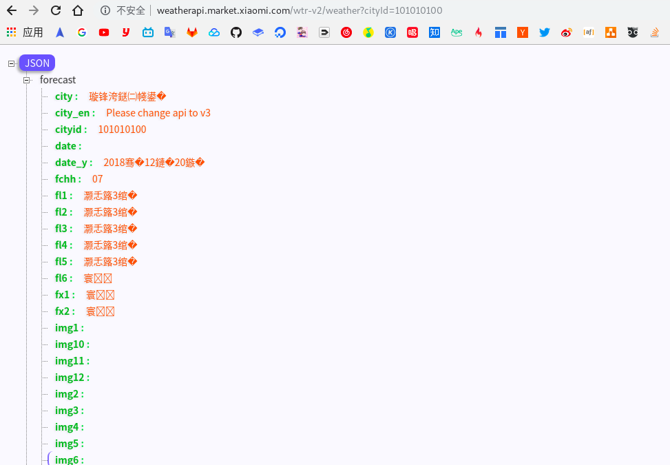

谷歌浏览器 Google Chrome 最大的特色之一就是拥有非常丰富的插件扩展，基本你能想得的功能都有实现，Chorme WebStore (网上应用商店) 简直就像是一个宝库，然而很多优秀的扩展却被埋没。
Chrome 插件总结
请使用 「番·羽·士·啬·工·具」下载使用下述插件
Proxy SwitchyOmega：浏览器代理设置神器，前身为 Proxy SwitchySharp，可以轻松快捷地管理多个代理，并能快速地在代理之间切换。可以设置规则或使用 PAC 自动智能对指定的网站使用代理，一句话 番·羽·土·啬 必备.
Google翻译:可以比较轻松的翻译网页中的内容.
JSON-handle:自动格式化网页上的json,开发者应该会喜欢

JSON-Viewer:自动格式化网页上的json,开发者应该会喜欢
二维码(QR码)生成器(QR Code Generator):可以将喜欢但是没有看完的网页的网址生成一个二维码,手机扫描就可以在路上看了.
Octotree:Code tree for GitHub and GitLab
AdGuard 广告拦截器:AdGuard 广告拦截器可有效的拦截所有网页上的所有类型的广告，甚至是在 Facebook、Youtube 以及其他网站上的广告！
RSS Feed Reader:让你的工具栏上显示一个简单RSS订阅.
阅读模式:提供与Safari阅读模式功能一致的插件，浏览文章页时候可进入友好的阅读模式，并自定义阅读功能.

OneTab:节省高达95％的内存，并减轻标签页混乱现象.将打开的标签页按照打开的时间产生一个tag并很方便的管理他们.
搜索拐杖:增强搜索便捷性的浏览器扩展
Tampermonkey:Tampermonkey 是一款免费的浏览器插件和最为流行的用户脚本管理器,它适用于基于Blink 和WebKit 的浏览器,像是Chrome, Microsoft Edge, Safari Opera Next, 和Firefox .
Todoist：待办事项列表及任务管理器.
Checker Plus for Gmail™:无需打开 Gmail 或 Inbox，即可收到桌面邮件通知，方便地查看、收听或删除邮件，并且支持多账户。
掘金:为设计师、程序员、产品经理每日发现优质内容。包含Android、前端、产品、设计、iOS、后端六大频道，每个频道内都有一到多个为你精心准备的优质内容源。
Video Speed Controller:使用快捷键加速，减慢，快进和回放任何HTML5视频。
Youtube Subscription(Collection) Manager:Youtube订阅了太多频道?这是管理频道的最好方法,分组订阅,快捷筛选.
Website IP:此扩展程序将您正在查看的网站的IP添加到右下角。
Keyframes:可以直接在浏览器中创建CSS动画，而无需在浏览器和编辑器之间切换。只需单击扩展，选择要设置动画的元素，然后使用表示动画中关键帧百分比的简单UI和时间轴编辑动画。完成后，您将获得可用的代码添加到项目中。